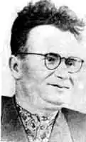

ХИЖНЯК Антон Федорович
(1907-1993)Народився 8 грудня 1907 року в с. Зачепилівка, Костянтиноградського повіту (тепер Зачепилівський район Харківської області).
Український письменник. На початку 30-х років працював редактором газети Красноградської МТС. У 1941 році закінчив Харківський педінститут. Друкуватися почав у 1927 році. Свою першу повість "Голуба кров" написав у стінах Красноградського краєзнавчого музею, в якому він користувався багатою бібліотекою. У 1950-61 роках був головним редактором "Літературної газети". Антон Федорович — автор історичних романів: "Данило Галиць кий", "Крізь століття", повістей "Тамара", "Невгамовна", "Онуки спитають", "Нільська легенда", "Київська прелюдія". За повість "Нільська легенда" одержав міжнародну премію ім. Гамаля Абделя Насера. Вийшла його збірка оповідань, нарисів і п'єс "На велику землю. Нагороджений орденами Трудового Червоного Прапора, "Знак Пошани", медалями. Зачепилівський колгосп установив премію імені комбрига Якова Захаровича Покуса. Перша премія була вручена Антону Федоровичу Хижняку, а він передав її у фонд Миру. Восени 1993 року помер.